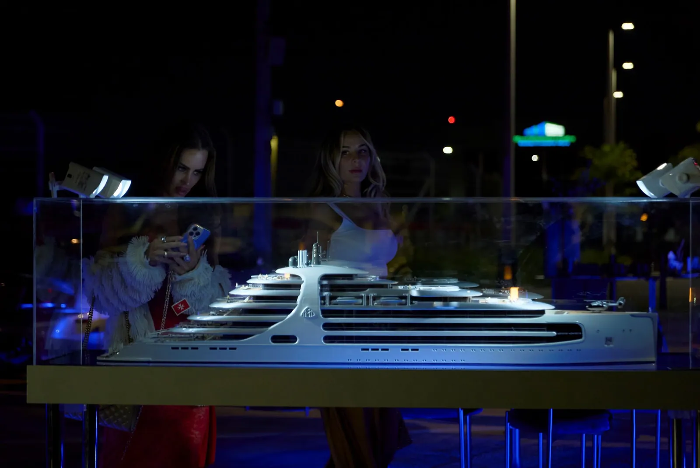

Maquete do Superiate “Beyond Horizons” (Miami)
- Cliente
- Splendid Sea
- Maquete
- Maquete personalizada de superiate à escala 1:100
- Tipo de instalação
- Maquete de exposição
- Características
- Maquete altamente detalhada sobre pedestal preto com cobertura de proteção em Perspex.
- Contexto
- Apresentação internacional do superiate “Beyond Horizons” em Miami, pela Maybach USA.